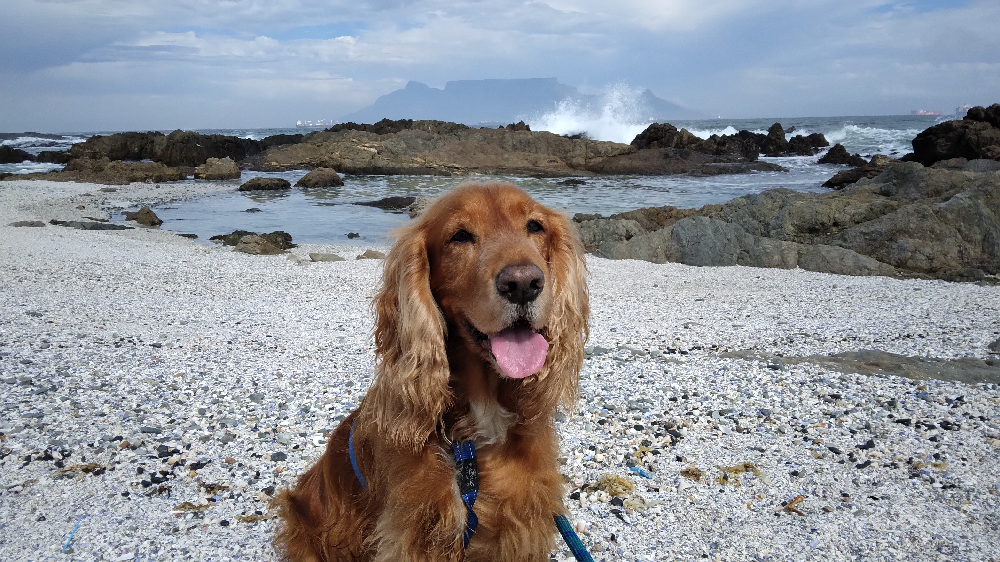

Featured Dogs Available for Adoption
Meet some of our dogs who are looking for their forever homes.
-

Max
Age: 2 years | Breed: Border Collie
Max is a great ball of energy and loves long walks on the beach.
Learn More -

Trixie
Age: 4 year | Breed: Scottish Terrier X Yorkie
Trixie is a perfect companion for someone with a calm and slow lifestyle. She loves to take afternoon naps in a sunny spot.
Learn More -

Diesel
Age: 7 years | Breed: German Shepherd
Diesel is an older man that likes to sleep late and cuddle with his human.
Learn More
Our Mission
The mission of Astro's Canine Rescue is to provide every rescued animal a second chance at life by ensuring they receive compassionate care, rehabilitation and a permanent loving home.
Learn More About UsOur Impact in Numbers
- 350+ Dogs Rescued
- 280+ Successful Adoptions
- 45+ Volunteers